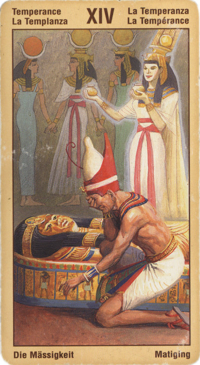

Умеренность
Смысл карты: сосредоточься, соберись с силами и будь милосерд к окружающим тебя людям. Тебе предстоит перемена в судьбе, возможно, далекое путешествие. Но пока наступила передышка. Используй же ее, чтобы еще раз подумать: что же возьмешь ты с собой из прошлого в будущее?
Значение: Да, говорит эта карта (в прямом положении), сейчас тебе приходится трудно – и кажется, что не хватит сил дойти до цели. Но тут надо вспомнить известный принцип “школы выживания”: ну еще хоть десять шагов, еще хоть пять, хоть один шаг! И еще один, самый последний. И – смотри! – вот ты и дошел до цели.
При ответе на вопрос об исходе задуманного дела обещает успех лишь тому, у кого хватит терпения и выдержки.
В иных ситуациях может означать успешные контакты за границей: поездки, деловые взаимоотношения или даже переселение “на постоянное место жительства”.
Выпадая в раскладе, эта карта является чрезвычайно благоприятным предзнаменованием. Она может указывать на то, что для вас, скорее всего, начинается этап успешных творческих усилий. Потоки вдохновения и удовлетворения спокойно перетекают между вашим сознательным и подсознательным "я" между вашим внутренним и внешним миром, вам совсем не надо что-то особо предпринимать. Магия несет в этот мир добро и красоту.
Значение карты Умеренности станет понятнее, если мы переведем его как "Верная мера". Она составляет позитивную противоположность следующему за ней Аркану Диавола, символизирующего неумеренность. "Умеренность" же характеризуется такими качествами, как гармония, сбалансированность, беззлобность и душевный покой. Эта карта соответствует тому счастливому состоянию, когда человек чувствует себя, любит себя и находится, поэтому в гармоничном равновесии с окружающим миром. Если вопрос касается здоровья, психического или физического, то Умеренность означает хорошее самочувствие или выздоровление.
Так жизнь переливается из видимого в невидимое и обратно. Солнце (или пучок света) на лбу ангела контролирует поток воды, который, будучи поднят солнечными лучами в воздух, возвращается на землю в виде дождя, чтобы быть поднятым вновь, и так до бесконечности. Трактовка этой карты связана с формой круга, который символизирует постоянный замкнутый внутри себя творческий процесс, приводящий к трансформации мира и перераспределению в нем ресурсов в их новом качестве. На традиционной карте таро обычно изображается девушка, переливающая воду из одной урны, в другую (постоянный поток жизненных сил в природе и необходимость для Жизни смешения элементов).
Этот аркан астрологически соотносится со знаком Стрельца, утверждающим в мире высокое мировоззрение, и с понятием человеческого гения, вершащего прогресс. Стрелец, как проводник Небесной воли на Землю, раскрывает представление об эволюции (нисходящем движении развития): - это путь идеи к земной действительности. Значение этого аркана связывает между собой Солнце и Луну (мужскую и женскую, сознательную и бессознательную сферы) - ясный дневной разум Солнца и лирические эмоции Луны. Взаимодействие светил служит основой "опускания" идеи в мир.
Идея из духовной сферы переходит в душевную, а поток эмоций способствует дальнейшему воплощению мысли.
"Умеренность" - путь стоика. "Умеренность и аккуратность" - этот девиз как нельзя лучше характеризует человека, следующего путем Четырнадцатого аркана. "Связывай и разделяй - создавай новые связи разъединенного ранее". То, что когда-то было неким единым, будучи разделенным, вечно хранит память о единстве. Негативные аспекты: чрезмерность, склонность излишне дробить процесс или, наоборот, соединять несоединимое, браться за много дел одновременно.
Астрологически карте "Умеренность" могут быть сопоставлены знаки Стрелец и Дева, планеты Меркурий и Прозерпина, а также Шестой Дом.
В прямом положении карта означает обновление душевных и физических сил. Надлежащий способ мышления - приспособление к существующему положению, смирение, спокойствие, уравновешенность в делах и во взглядах на жизнь. Иногда "умеренность" (если карта выпадает после плохой) это и победа над превратностями судьбы, принятие целесообразных решений и выход на путь правильных поступков.
Основной смысл карты - терпение, умение ждать. Компромиссы, неторопливость, бережливость, раздумья. Дипломатичность. Разумное ведение дел. Самодисциплина. Совет вкладывать деньги в прибыльные предприятия, давать в долг под проценты. Если искать партнера - то с похожими чертами характера.
Такими же неторопливыми, как сама жизнь, стали ваши мысли, чувства и настроения. Вы словно бы покачиваетесь на волнах огромной, плавно скользящей реки и сами плывете вдаль так же неспешно, доверяя своему «проводнику». Что будет дальше - вы не знаете, но внутренний голос подсказывает вам, что впереди - только хорошее.
Итак, если Аркан «Воздержанность» выпадает в личном раскладе, он свидетельствует о том, что вы - личность самодостаточная (в наилучшем понимании этого слова). Вы не капризны и не взбалмошны, управляете своими настроениями и не подвержены влиянию чужих эмоций. К вам охотно тянутся люди: то ясное и дружелюбное состояние духа, в котором вы обычно пребываете, притягивает к вам окружающих.
В перевернутом виде означает, что сил дойти до цели не хватит, поэтому от задуманного лучше отказаться. Контакты с зарубежными странами неудачны.
Или – излишества, которые, как известно, вредны.
Для бизнесмена перевернутая Умеренность – совет временно умерить свои аппетиты, затихнуть, “заморозить” фирму и переждать месяца три, если не больше.
Умеренность советует предоставить скрытым в вас внешнему и внутреннему началам, мужскому и женскому принципам, объединиться, обеспечив тем самым рождение вашего творческого "Я".
В перевернутом положении карта говорит о неправильных взглядах на жизнь и неправильном подходе к людям. Чрезмерная эмоциональность, вспыльчивость, резкая перемена настроения (как погода в горах), неразумные и непредсказуемые поступки.
Перевернутая позиция может сигнализировать и о том, что вам не стоит браться за такое большое количество дел сразу, или же, наоборот, - вы должны постараться соединить все свои дела и увлечения - в одно целое.
Если данный Аркан выпадает в окружении неблагоприятных Младших или в перевернутом виде, то он, как правило, смягчает их негативное значение.
В раскладе на ситуацию Аркан «Воздержанность» указывает на благоприятный исход событий, однако предупреждает, что вам не стоит надеяться на «форсированное» решение проблемы. Дело будет продвигаться неторопливо, но и без особых препятствий. Запаситесь должным терпением, и через некоторое время вы благополучно «доплывете» до нужной вам цели!
Отрицательное значение: конкуренция, неудачный брак, неудачное партнерство. Расстройство, разъединение. Совет поручить вести ваши дела более знающим людям. Или просто переждать- сейчас не ваше время. А может быть, сидение у реки не такое уж плохое дело - рано или поздно она сама что-нибудь да принесет.